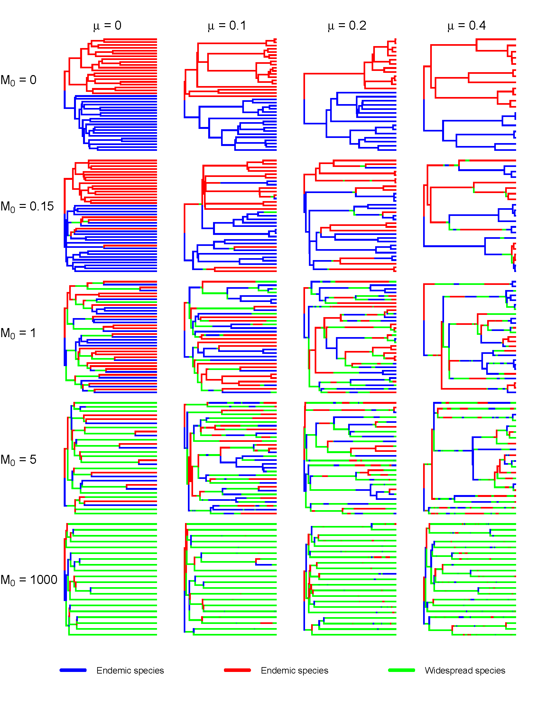
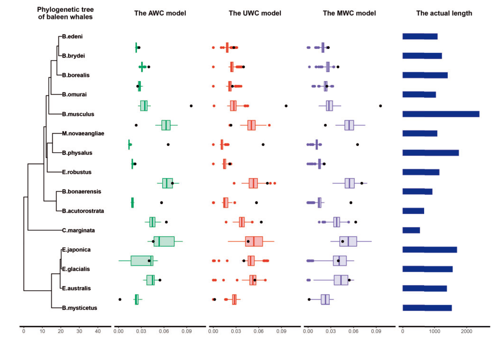
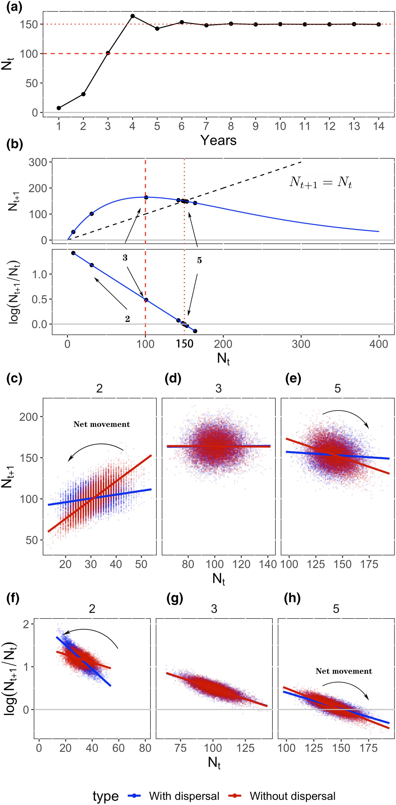
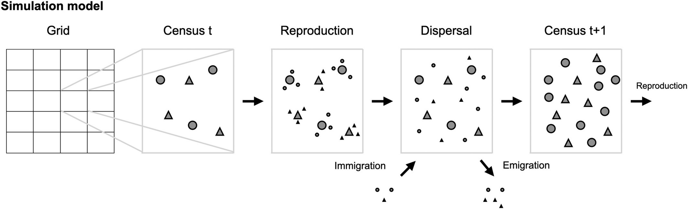
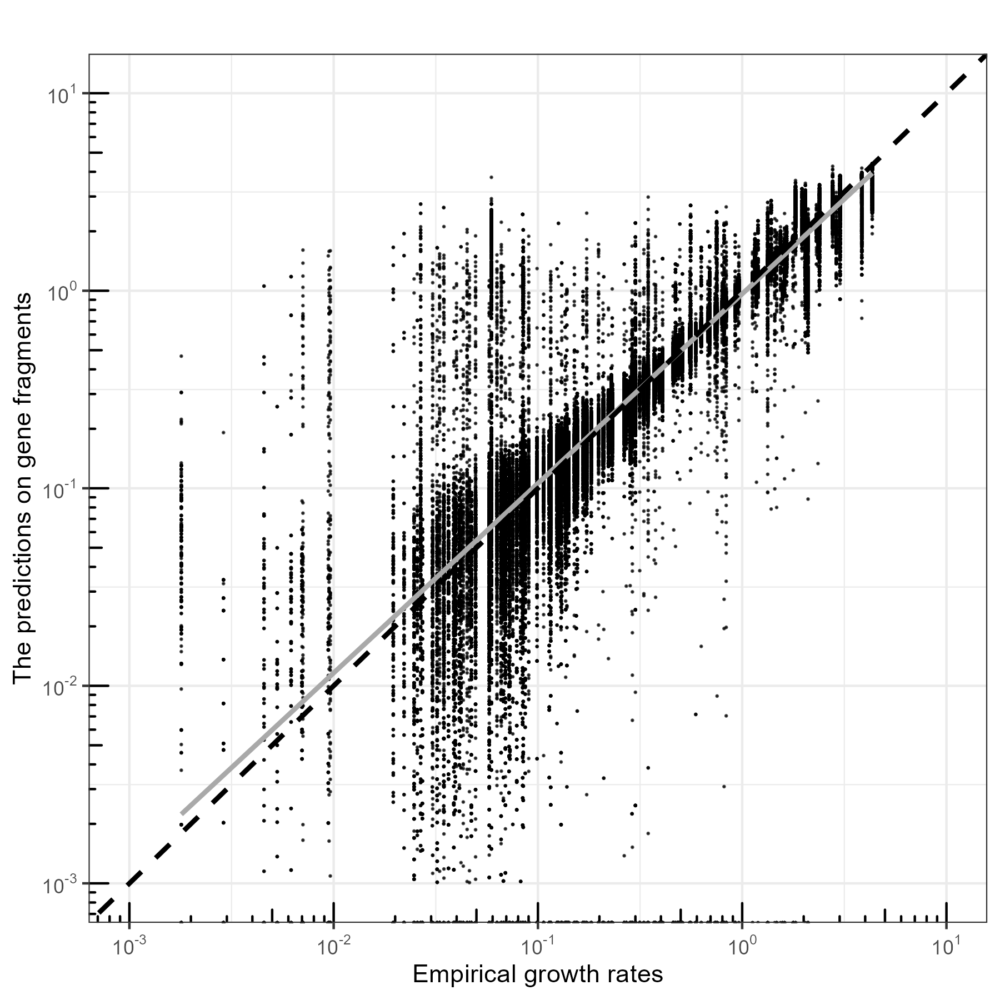

We combine theoretical, computational, and machine learning approaches to understand complex systems in ecology and evolution. We study species interactions, the formation of morphological traits, and the mechanisms that sustain trait diversity and biodiversity, particularly among coexisting species.
Species phenotype formation in ecology and evolution
The formation of species phenotypes results from biotic and abiotic interactions in both ecological and evolutionary contexts. On an ecological timescale, phenotype determine species fitness. Species with optimal phenotype dominate specific niches, and the number of available niches facilitates species coexistence by favoring different phenotype.
On an evolutionary timescale, phenotype can change due to mutations and accumulated genetic variation, triggering an evolutionary arms race between species. Maintaining local biodiversity thus requires a balance between competitive exclusion and environmental adaptation. Migration helps maintain the diversity by supporting outcompeted species that may be favored in other locations and by introducing novel genotypes. As a result, these processes affect the characteristics of phylogenetic trees and in turn they may be inferred from phylogenetic patterns.
To study how migration affects phylogenetic patterns, we built a spatil model that incorporated migration between two locations. We generated phylogenetic trees under different evolutionary rates and migration rates ($M$). We assessed whether the DDD model (Etienne et al. 2012) that only accounts for local evolutionary events can still predict the evolutionary rates (Xu & Etienne 2018).
 Figure 1. Examples of phylogenetic trees under different extinction rates and migration rates. The branches are colored by the location of species. Sympatric speciation and allopatric speciation are also distinguishable by the color of the nodes and the daughter species.
Species morphological traits are shaped on ecological and evolutionary timescales. We established a trait evolution model incorporating population dynamics to describe trait evolution under environmental adaptation and competition. We applied three trait evolution models to mimic trait changes of baleen whale along phylogenetic trees (Xu et al. 2020).
 Figure 2. Prediction of the phylogenetic independent contrasts (PICs) of baleen whale log-transformed body length, simulated using the parameters estimated using three trait evolution models. The phylogeny is the reconstructed tree of the Mysticeti with the x-axis in units of million years (Slater et al. 2017). The box plots show the distributions of PICs. The bars on the right show the untransformed body length of the species.
Competition plays a key role in shaping composition of local communities. Empiricists in plants often use space-for-time-substitution methods to estimate the strength of competition. However, in population models, dispersal is usually ignored. This generates bias in statistical estimation of competition. We built a spatial model accounting for dispersal among patches and provide analytical solutions (Xu et al. 2022).
Right figure: Behaviour of the Ricker model. (a) Trajectory (b) future population size ($N_{t+1}$) and per-capita population growth rate as a function of current density ($N_t$) for the deterministic Ricker model (a single well-mixed population).
Figure below: Schematic of the simulation model. Each cell hosts a number of adult plants (large symbols) which are censused each year.
Adults produce seeds (small symbols) following a local population model with competition occurring only within cells. Seeds then disperse to
other cells, following a dispersal kernel. Existing adults die and seeds grow into new adults that are censused at the following time step.
 Figure 4. Schematic of the simulation model.
Learning phenotype from genomics
The advancement of machine learning provides powerful tools for recognizing and classifying highly abstract patterns within genomic data. I aim to apply these techniques to explore the predictive potential of viral genotypes.
My current project on estimating the maximum growth rate of bacteria using convolutional neural networks (CNN) and transformer models has demonstrated the potential of these techniques. The two deep-learning models have distinct advantages: the CNN model excels at detecting dependencies in local patterns, while the transformer model captures global or long-range dependencies in long sequences. We found that the CNN model outperformed traditional phylogenetic methods (such as the nearest-neighbor or Brownian motion methods) in detecting phylogenetic signals.
 Figure 5. Phylogeny and trait of a clade of bacteria.
Figure 5. Phylogeny and trait of a clade of bacteria.
The American theoretical physicist Richard Feynman said, “What I cannot create, I do not understand.” The overarching goal of my research is to generate possible genomic configurations that express specific phenotypes given abiotic and biotic conditions using generative models.
 Figure 6. CNN predictions on gene fragments.